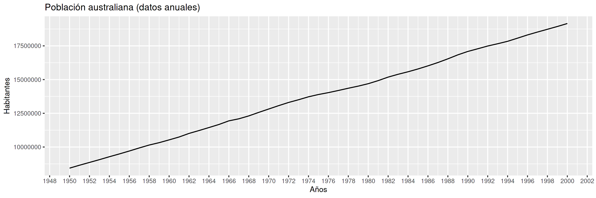
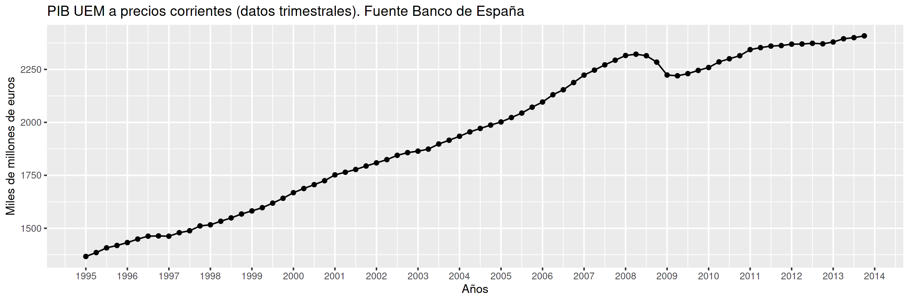
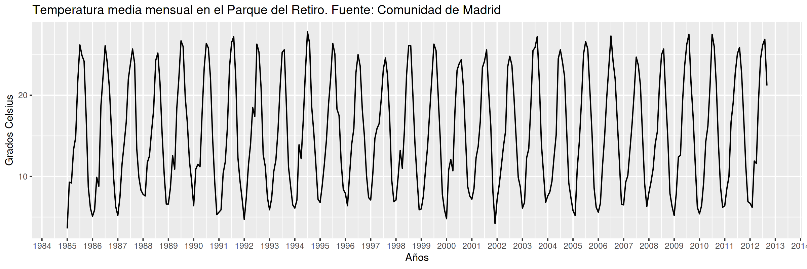
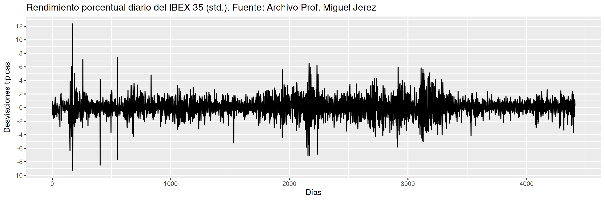
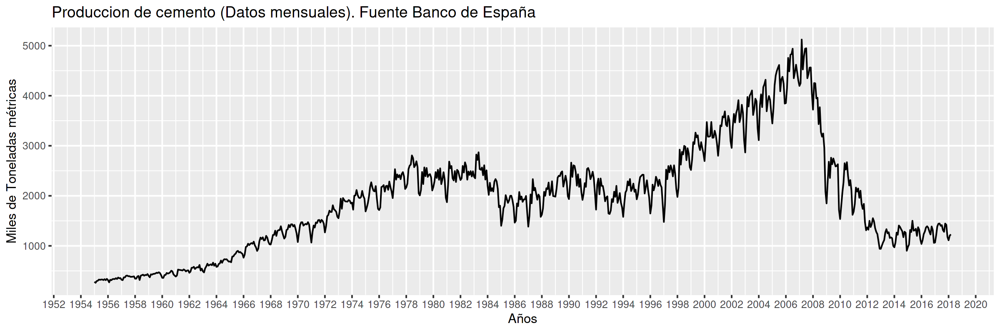

Econometría Aplicada. Lección 5
Table of Contents
Esta lección veremos las dificultades que ocasiona la correlación serial y algunos tipos de procesos débilmente estacionarios que nos permitirán lidiar con ella. En particular veremos los procesos lineales, su valor esperado y su función de autocovarianzas, la función de covarianzas cruzadas entre dos procesos lineales, y las ecuaciones de Yule-Walker.
Carga de algunas librerías de R
Primero cargamos la librería tfarima (Repositorio Cran:
https://cran.r-project.org/web/packages/tfarima/index.html;
repositorio GitHub: https://github.com/gallegoj/tfarima)
library(tfarima) # librería de José Luis Gallego para Time Series library(readr) # para leer ficheros CSV library(ggplot2) # para el scatterplot (alternaticamente library(tidyverse)) library(ggfortify) # para pintar series temporales library(jtools) # para representación resultados estimación library(zoo) # para generar objetos ts (time series)
y además fijamos los parámetros por defecto para las figuras en png
del notebook
# fijamos el tamaño de las figuras que se generan en el notebook options(repr.plot.width = 12, repr.plot.height = 4, repr.plot.res = 200)
1. Series temporales vs datos de sección cruzada
Corresponden a observaciones de un mismo objeto a lo largo del tiempo. El índice indica el instante de cada medición. El orden cronológico puede ser crucial al modelar los datos.
- El motivo es que frecuentemente el valor medido en un instante de tiempo está relacionado con otras mediciones próximas en el tiempo (correlación serial).
- Si es así, ya no deberíamos asumir que las variables aleatorias del proceso estocástico subyacente, \(\boldsymbol{X}=(X_t\mid t\in\mathbb{Z})\), son independientes entre sí.
Esto tiene importantes implicaciones en las técnicas de análisis y los modelos a utilizar.
Veamos algunos ejemplos de series temporales…
- Población en Australia
PoblacionAustralia_ts = as.ts( read.zoo('datos/PoblacionAustralia.csv', header=TRUE, index.column = 1, sep=",", FUN = as.yearmon)) p <- autoplot(PoblacionAustralia_ts) p <- p + labs(y = "Habitantes", x = "Años") + ggtitle("Población australiana (datos anuales)") p <- p + scale_x_continuous(breaks = scales::pretty_breaks(n = 20)) p

- PIB UEM
PIB_UEM_df <- read_csv("datos/PIB_UEM.csv", show_col_types = FALSE) fmt <- "%YQ%q" PIB_UEM_df$Time <- as.yearqtr(PIB_UEM_df$obs, format = fmt) # head(PIB_UEM_df,3) P <- ggplot(PIB_UEM_df, aes(Time, PIB)) P <- P + geom_point() + geom_line() P <- P + scale_x_continuous(breaks = scales::pretty_breaks(n = 15)) P <- P + labs(y = "Miles de millones de euros", x = "Años") P <- P + ggtitle("PIB UEM a precios corrientes (datos trimestrales). Fuente Banco de España") P

- Temperatura media en el Parque del Retiro. Madrid
TemperaturaRetiro_df <- read_csv("datos/Retiro.txt", show_col_types = FALSE) # Añadimos fechas TemperaturaRetiro_df$Time <- as.yearmon(1985 + seq(0, nrow(TemperaturaRetiro_df)-1)/12) P <- ggplot(TemperaturaRetiro_df, aes(Time, TemperaturaMedia)) P <- P + geom_line() # + geom_point() P <- P + scale_x_continuous(breaks = scales::pretty_breaks(n = 25)) P <- P + labs(y = "Grados Celsius", x = "Años") P <- P + ggtitle("Temperatura media mensual en el Parque del Retiro. Fuente: Comunidad de Madrid") P

- Rendimiento porcentual diario del IBEX 35 (std)
IBEX35_ts = as.ts( read.csv.zoo("datos/IBEX35.csv", strip.white = TRUE)) P <- autoplot(IBEX35_ts) + scale_y_continuous(breaks = scales::pretty_breaks(n = 12)) p <- P + labs(y = "Desviaciones típicas", x = "Días") p <- P + ggtitle("Rendimiento porcentual diario del IBEX 35 (std.). Fuente: Archivo Prof. Miguel Jerez") p

- Datos centrados y estandarizados, i.e. el eje vertical está en desviaciones típicas.
- Los volatility clustering son característicos de series financieras de alta frecuencia.
- Producción de cemento
ProduccionCemento_df <- read_csv("datos/ProduccionCemento.csv", show_col_types = FALSE) fmt <- "%YM%m" ProduccionCemento_df$Time <- as.yearmon(ProduccionCemento_df$obs, format = fmt) # head(ProduccionCemento_df,3) P <- ggplot(ProduccionCemento_df, aes(Time, ProduccionCemento)) P <- P + geom_line() # + geom_point() P <- P + scale_x_continuous(breaks = scales::pretty_breaks(n = 25)) P <- P + labs(y = "Miles de Toneladas métricas", x = "Años") P <- P + ggtitle("Producción de cemento (Datos mensuales). Fuente Banco de España") P

1.1. Correlación serial vs muestreo aleatorio simple
Con datos de
- sección cruzada
- solemos asumir que el muestreo es aleatorio
simple
- i.e., los datos son realizaciones de variables aleatorias i.i.d.
- series temporales
dicha asunción resulta generalmente errónea
- con frecuencia el nivel esperado (o la volatilidad) parece cambiar con \(t\)
- con frecuencia hay dependencia temporal (correlación serial).
Ejemplo: no parece aceptable asumir que \(ProdCemento_{1960M01}\) se distribuye igual que \(ProdCemento_{2000M04}\) (ni que sea independiente de \(ProdCemento_{1959M01}\)).
Veamos por qué esto genera dificultades…
Consideremos el proceso estocástico \[\boldsymbol{X}=(X_t \mid t=0,\pm1,\pm2,\ldots).\] Caracterizar su distribución conjunta (todos los momentos) es demasiado ambicioso.
Así que, tentativamente, vamos a fijarnos solo en los dos primeros momentos:
\[E(X_t)={\color{blue}{ \mu_t}}\quad\text{ y }\quad Cov(X_t,X_k)=E\big[(X_t-\mu_t)(X_k-\mu_k)\big]={\color{blue}{\gamma_{t,k}}};\quad t,k\in\mathbb{Z}\]
(si \(\;k=t\;\) entonces \(\;\gamma_{t,t}=Var(X_t)=\sigma^2_t\)).
Si el proceso \(\boldsymbol{X}\) fuera gaussiano, conocer estos parámetros bastaría para caracterizar la distribución conjunta. Pero aún así…
- necesitaríamos para cada \(X_t\) una muestra suficiente para estimar los parámetros
- pero en una serie temporal tenemos una sola realización de cada \(X_t\).
- Además… para cada variable aleatoria \(X_t\) hay infinitos parámetros.
1.2. Simplificación del escenario
Si \(\boldsymbol{X}\) es débilmente estacionario se reduce drásticamente el número de parámetros:
\begin{eqnarray} E(X_t) & = \mu \\ Cov(X_t,X_{t-k}) & = \gamma_k \end{eqnarray}El desafío para el analista es (y nótese el abuso de lenguaje)
- primero
- transformar los datos para lograr que sean "estacionarios".
- (Algo vimos en la lección 1))
- después
- transformar los datos estacionarios en "ruido blanco"
- (Es lo que iniciaremos en esta lección y las siguientes)
Todo este proceso constituye la especificación y ajuste de un modelo a la serie temporal.
Antes de atacar los temas de especificación y ajuste de modelos, debemos estudiar un poco los procesos estocásticos débilmente estacionarios que vamos a utilizar.
2. Procesos estocásticos de segundo orden
El ambiente natural para estudiar las propiedades de segundo orden de una colección de variables aleatorias es el espacio de variables aleatorias \(X\) definidas en un espacio de probabilidad tales que \[E(X)=0 \quad\text{y}\quad E(X^2)<\infty\] donde \(E\) es el operador esperanza. Denotaremos este espacio con \(H\).
2.1. Un poco de geometría
El espacio, dotado de producto escalar y norma \[\langle X \mid Y \rangle=E(XY),\qquad \lVert X \rVert= \sqrt{E(X^2)},\qquad X,Y \in H,\] es un espacio de Hilbert,
Nótese que como las variables de \(H\) tienen esperanza cero, el producto escalar entre \(X,Y\in H\) también es \[\langle X \mid Y \rangle=Cov(X,Y).\] Por tanto, en este espacio \(H\) la noción geométrica de ortogonalidad coincide con la noción estadística de no correlación. Por tanto, en este contexto los términos producto escalar, covarianza y esperanza del producto serán intercambiables.
Una colección de variables aleatorias pertenecientes a \(H\) \[\boldsymbol{X}=(X_t\mid t\in\mathbb{Z}) \;\text{ con }\; X_t\in H\] se denomina proceso estocástico de segundo orden.
Si \(\boldsymbol{Y}=(Y_t\mid t\in\mathbb{Z})\) es tal que \(E(Y_t)=\mu\ne0\), entonces \(\boldsymbol{Y}\) no es de segundo orden.
Pero basta restar \(\mu\) de cada \(Y_t\) para tener un proceso \((\boldsymbol{Y}-\mu\boldsymbol{1})\) de segundo orden.
Por ello siempre asumiremos (sin pérdida de generalidad) que las variables aleatorias de los procesos estocásticos de esta lección (y la siguiente) tienen esperanza cero.
2.2. Primeros momentos de procesos estocásticos de segundo orden
Si \(E(X_t)<\infty\) para \(t\in\mathbb{Z}\), entonces \(E(\boldsymbol{X})\) es la secuencia \[E(\boldsymbol{X})=\big(E(X_t)\mid t\in\mathbb{Z}\big)=\sum\nolimits_{t\in\mathbb{Z}} E(X_t) z^t=\big(\ldots,\;E(X_{-1}),\;E(X_{0}),\;E(X_{1}),\ldots\big)\]
Si \(\boldsymbol{X}\) tiene segundos momentos finitos, la secuencia de autocovarianzas de orden \(k\) es
\begin{align*} %Cov(\boldsymbol{X},\boldsymbol{X}*z^k) = & %E\Big(\big[\boldsymbol{X}-E(\boldsymbol{X})\big]\odot\big[(\boldsymbol{X}-E(\boldsymbol{X}))*z^k\big]\Big)\\ \left.\Big(Cov(X_t,X_{t-k})\right| t\in\mathbb{Z}\Big) = & %\left.\Big(E\big[\big(X_t-E(X_t)\big)\big(X_{t-k}-E(X_{t-k})\big)\big]\; \right| t\in\mathbb{Z}\Big)\\ %=& % \sum_{t\in\mathbb{Z}} \gamma_{_{k,t}} z^t (\gamma_{_{k,t}}\mid t\in\mathbb{Z})\\ % \;=\; = & (\ldots,\,\gamma_{_{k,-1}},\,{\color{blue}{\gamma_{_{k,0}}}},\,\gamma_{_{k,1}},\,\gamma_{_{k,2}},\ldots);\quad k\in\mathbb{Z}. \end{align*}(nótese que la secuencia solo contiene covarianzas de orden \(k\))
Así, para cada par \((k,t)\), tenemos la covarianza \(\gamma_{k,t}\) entre \(X_t\) y \(X_{t-k}\). Por tanto, en general, tenemos una esperanza para cada \(t\) y una covarianza de orden \(k\) para cada \(t\). Dado que \(t\) recorre todos los números enteros, ¡esto son muchos momentos! Por eso necesitamos reducir el número de parámetros restringiéndonos a procesos estocásticos débilmente estacionarios.
2.3. Procesos estocásticos (débilmente) estacionarios y la ACF
Un proceso estocástico de segundo orden \(\boldsymbol{X}\) se dice que es débilmente estacionario si \(E(X_t)=\mu\) para todo \(t\in\mathbb{Z}\) y la covarianza entre \(X_s\) y \(X_t\) solo depende de la diferencia \(s-t\) para todo \(s,t\in\mathbb{Z}\).
En tal caso, definimos la función de autocovarianzas como: \[\boldsymbol{\gamma} = (\gamma_{k}\mid k\in\mathbb{Z}) = (\ldots,\,\gamma_{-1},\,{\color{blue}{\gamma_{0}}},\,\gamma_{1},\,\gamma_{2},\ldots) \;=\;\sum_{-\infty}^{\infty} \gamma_k z^k.\]
Propiedades de la función de autocovarianzas \(\boldsymbol{\gamma}\) (ACF):
- \(\gamma_0\geq0\)
- \(\boldsymbol{\gamma}\) es definida positiva; y por tanto,
- \(\boldsymbol{\gamma}\) es simétrica: \(\gamma_k=\gamma_{-k}\)
- \(\boldsymbol{\gamma}\) es acotada: \(|\gamma_k|\leq\gamma_0\)
Y llamamos función de autocorrelación (ACF) a la secuencia: \(\;\boldsymbol{\rho}=\frac{1}{\gamma_0}(\boldsymbol{\gamma}) =\sum\limits_{k\in\mathbb{Z}}\frac{\gamma_k}{\gamma_0}z^k\).
3. Notación: convolución y el operador retardo
Sea \(\boldsymbol{a}\) una secuencia de números y sea \(\boldsymbol{X}\) un proceso estocástico tales que la suma \[\sum\limits_{k=-\infty}^{\infty}a_kX_{t-k}\;\] converge para todo \(t.\;\) Entonces:
Definimos el producto convolución (\(*\)) de \(\boldsymbol{a}\) con \(\boldsymbol{X}\) como el proceso estocástico: \[\boldsymbol{a}*\boldsymbol{X}=\left(\left.\sum_{r+s=t} a_r X_s \right| t\in\mathbb{Z}\right)\] es decir \[(\boldsymbol{a}*\boldsymbol{X})_t=\sum_{r+s=t} a_r X_s,\quad \text{para } t\in\mathbb{Z}.\] Por tanto, cada elemento de \((\boldsymbol{a}*\boldsymbol{X})\) es una combinación de variables aleatorias de \(\boldsymbol{X}\)
Podemos aplicar el operador \(\mathsf{B}\) sobre los elementos de un proceso estocástico \(\boldsymbol{X}\). \[\mathsf{B} X_t = X_{t−1},\quad \text{para } t\in\mathbb{Z}.\]
Aplicando el operador \(\mathsf{B}\) repetidamente tenemos \[\mathsf{B}^k X_t = X_{t−k},\quad \text{para } t,z\in\mathbb{Z}\]
Así, para el polinomio \(\boldsymbol{a}(z)=a_0+a_1z+a_2z^2+a_3z^3\), y el proceso estocástico \(\boldsymbol{Y}\)
\begin{align*} \boldsymbol{a}(\mathsf{B})Y_t & = (a_0+a_1\mathsf{B}+a_2\mathsf{B}^2+a_3\mathsf{B}^3) Y_t \\ % & = a_0 Y_t + a_1 \mathsf{B}^1 Y_t + a_2 \mathsf{B}^2 Y_t + a_3 \mathsf{B}^3 Y_t \\ & = a_0Y_t+a_1Y_{t-1}+a_2Y_{t-2}+a_3Y_{t-3} \\ % & =\sum\nolimits_{r=0}^3 a_r Y_{t-r} \\ & =(\boldsymbol{a}*\boldsymbol{Y})_t,\quad \text{para } t\in\mathbb{Z} \end{align*}Y en general, si la suma \(\sum\limits_{k=-\infty}^{\infty}a_kY_{t-k}\) converge para todo \(t\), entonces
\begin{align*} \boldsymbol{a}(\mathsf{B})Y_t & = (\cdots+a_{-2}\mathsf{B}^{-2}+a_{-1}\mathsf{B}^{-1}+a_0+a_1\mathsf{B}+a_2\mathsf{B}^2+\cdots) Y_t \\ % & = a_0 Y_t + a_1 \mathsf{B}^1 Y_t + a_2 \mathsf{B}^2 Y_t + a_3 \mathsf{B}^3 Y_t \\ & = \cdots+a_{-2}Y_{t+2}+a_{-1}Y_{t+1}+a_0Y_t+a_1Y_{t-1}+a_2Y_{t-2}+\cdots \\ % & =\sum\nolimits_{r=0}^3 a_r Y_{t-r} \\ & =(\boldsymbol{a}*\boldsymbol{y})_t,\quad \text{para } t\in\mathbb{Z} \end{align*}4. Ejemplos de procesos (débilmente) estacionarios
4.1. Proceso de ruido blanco
Una secuencia \(\boldsymbol{U}=(U_t\mid t\in\mathbb{Z})\) de variables aleatorias incorreladas y tales que \[E(U_t)=0\quad\text{ y }\quad Var(U_t)=E(U_t^2)=\sigma^2\] para \(\;t\in\mathbb{Z}\;\) y \(\;0<\sigma^2<\infty\;\) se llama proceso de ruido blanco. \(\quad\boldsymbol{U}\sim WN(0,\sigma^2)\).
Al ser variables aleatorias incorreladas, su función de autocovarianzas es \[\boldsymbol{\gamma}(z)\;=\;\sigma^2 z^0\;=\;(\ldots,0,0,\sigma^2,0,0,\ldots)\]
- Es el proceso estacionario (no trivial) más sencillo.
- Este proceso es el pilar sobre el que definiremos el resto de ejemplos.
4.2. Procesos lineales
Sea \(\boldsymbol{U}\sim WN(0,\sigma^2)\) y sea \(\boldsymbol{b}\in \ell^2\); una secuencia de cuadrado sumable \(\;\sum\limits_{j\in\mathbb{Z}}{b}_j^2<\infty\).
Denominamos proceso lineal al proceso estocástico \(\boldsymbol{X}=\boldsymbol{b}*\boldsymbol{U}\) cuyos elementos son \[X_t \;=\;(\boldsymbol{b}*\boldsymbol{U})_t \;=\;\boldsymbol{b}(B)U_t \;=\;\sum_{j=-\infty}^\infty {b}_j U_{t-j};\qquad t\in\mathbb{Z}.\]
\(\boldsymbol{b}(B)\) se denomina función de transferencia del filtro lineal que relaciona \(X_t\) con \(U_t\).
El proceso lineal es ``causal'' si además \(\boldsymbol{b}\) es una serie formal (i.e., \(cogrado(\boldsymbol{b})\geq{\color{blue}{0}}\)) \[X_t=\sum_{j=0}^\infty {b}_j U_{t-j};\qquad t\in\mathbb{Z}\] \(\;\) (pues cada \(X_t\) es una suma de variables "del presente y/o el pasado").
La clase de procesos lineales incluye muchas e importantes subclases de procesos, algunas de las cuales son objeto principal de estudio de este curso.
4.2.1. Media móvil infinita. MA(\(\infty\))
Sea \(\;\boldsymbol{U}\sim WN(0,\sigma^2)\;\) y sea \(\;\boldsymbol{\psi}\in \ell^2\;\) una serie formal con infinitos términos NO nulos; entonces el proceso estocástico \(\boldsymbol{\psi}*\boldsymbol{U}\), cuyos elementos son \[X_t \;=\;(\boldsymbol{\psi}*\boldsymbol{U})_t \;=\;\boldsymbol{\psi}(B)U_t \;=\;\sum_{j=0}^\infty \psi_j U_{t-j};\qquad t\in\mathbb{Z}\] se denomina proceso de media móvil infinita MA(\(\infty\)).
Algunas clases de procesos lineales tienen una representación parsimoniosa, pues basta un número finito de parámetros para representarlos completamente. Por ejemplo, cuando \(\boldsymbol{\psi}\) tiene un número finito de términos no nulos…
4.2.2. Proceso de media móvil de orden \(q\). MA(\(q\))
Sea \(\;\boldsymbol{U}\sim WN(0,\sigma^2)\;\) y sea \(\;\boldsymbol{\theta}\;\) un polinomio de grado \(q\) con \({\color{#008000}{\theta_{0}=1}}\); entonces el proceso estocástico \(\boldsymbol{\theta}*\boldsymbol{U}\), cuyos elementos son \[X_t \;=\;(\boldsymbol{\theta}*\boldsymbol{U})_t \;=\;\boldsymbol{\theta}(B)U_t \;=\;\sum_{j=0}^q\theta_j U_{t-j};\qquad t\in\mathbb{Z}\] se denomina proceso de media móvil MA(\(q\)).
Es decir, si \(\;\boldsymbol{\theta}=(1-\theta_1z-\cdots-\theta_qz^q)\;\): \[ X_t = U_t - \theta_1 U_{t-1} - \cdots - \theta_q U_{t-q}.\]
Hay otros procesos lineales con representación parsimoniosa.
4.2.3. Proceso autorregresivo de orden \(p\). AR(\(p\))
Sea \(\;\boldsymbol{U}\sim WN(0,\sigma^2)\;\), se denomina proceso autorregresivo de orden \(p\) a aquel proceso estocástico estacionario \(\;\boldsymbol{X}\;\) que es la solución de la siguiente ecuación en diferencias \[\boldsymbol{\phi}*\boldsymbol{X}=\boldsymbol{U}\] donde \(\;\boldsymbol{\phi}\;\) un polinomio de grado \(p\) con \({\color{#008000}{\phi_{0}=1}}\);
Por tanto, \[(\boldsymbol{\phi}*\boldsymbol{X})_t= \boldsymbol{\phi}(\mathsf{B})X_t= \sum_{j=0}^p \phi_j X_{t-j} = U_t.\]
Si \(\;\boldsymbol{\phi}=(1-\phi_1z-\cdots-\phi_pz^p)\;\) entonces \(\boldsymbol{X}=(X_t\mid t\in\mathbb{Z})\) es solución de la ecuación: \[X_t + \phi_1 X_{t-1} + \cdots + \phi_q X_{t-q} = U_t.\]
El problema con la anterior definición es que la ecuación \(\boldsymbol{\phi}*\boldsymbol{X}=\boldsymbol{U}\) no tiene solución única (y en algunos casos ninguna solución es estacionaria). Despejemos \(\boldsymbol{X}\) para verlo.
Multiplicando ambos lados de la ecuación por una inversa de \(\boldsymbol{\phi}\) tenemos \[\boldsymbol{X}=inversa(\boldsymbol{\phi})*\boldsymbol{U}.\] Y si denotamos la secuencia \(inversa(\boldsymbol{\phi})\) con \(\boldsymbol{a}\) entonces \[X_t=\boldsymbol{a}(\mathsf{B})U_t=\sum_{j\in\mathbb{Z}} a_j U_{t-j}.\]
Pero… ¿Qué secuencia \(\boldsymbol{a}\) usamos como inversa de \(\boldsymbol{\phi}\)? Recuerde que hay infinitas y la mayoría no son sumables (si el polinomio \(\boldsymbol{\phi}\) tiene raíces unitarias ninguna lo es).
En tal caso la expresión \(\;\boldsymbol{a}(\mathsf{B})U_t=\sum\limits_{j=-\infty}^\infty a_j U_{t-j}\;\) carece de sentido (pues no converge).
Requisitos sobre el polinomio autorregresivo \(\boldsymbol{\phi}.\;\) Para que el proceso AR exista y sea:
estacionario, exigiremos que \(\boldsymbol{\phi}\) no tenga raíces de módulo 1.
Entonces existe una única inversa absolutamente sumable: \(\boldsymbol{\phi}^{-1} \in \ell^1\subset\ell^2\).
La inversa \(\boldsymbol{a}=\boldsymbol{\phi}^{-1}\) corresponde a la única solución estacionaria de \(\boldsymbol{\phi}*\boldsymbol{X}=\boldsymbol{U}\). (Si \(\boldsymbol{\phi}\) tuviera raíces de módulo 1 no existiría ni \(\boldsymbol{\phi}^{-1}\), ni la solución estacionaria).
\[X_t=\boldsymbol{\phi}^{-1}(\mathsf{B})U_t=\sum_{j=-\infty}^\infty a_j U_{t-j}\]
lineal causal exigiremos que las raíces de \(\boldsymbol{\phi}\) sean mayores que 1 en valor absoluto (raíces fuera del círculo unidad): \(\boldsymbol{\phi}^{-1}=\boldsymbol{\phi}^{-\triangleright}\).
\[X_t=\boldsymbol{\phi}^{-1}(\mathsf{B})U_t=\sum_{j=0}^\infty a_j U_{t-j}\]
El siguiente modelo lineal es una combinación (o generalización) de los dos anteriores.
4.2.4. Proceso autorregresivo de media móvil. ARMA(\(p,q\))
Sea \(\;\boldsymbol{U}\sim WN(0,\sigma^2)\;\), se denomina proceso autorregresivo de media móvil \((p,q)\) al proceso estocástico estacionario \(\;\boldsymbol{X}\;\) que es la solución de la ecuación en diferencias: \[\boldsymbol{\phi}*\boldsymbol{X}=\boldsymbol{\theta}*\boldsymbol{U}\] donde el polinomio autorregresivo \(\;\boldsymbol{\phi}\;\) tiene grado \(p\) con \({\color{#008000}{\phi_{0}=1}}\) y con todas sus raíces fuera del círculo unidad (por los motivos anteriormente vistos); y el polinomio de media móvil \(\;\boldsymbol{\theta}\;\) es de grado \(q\) con \({\color{#008000}{\theta_{0}=1}}\);
\[\text{es decir,}\qquad \boldsymbol{X}=\frac{\boldsymbol{\theta}}{\boldsymbol{\phi}}*\boldsymbol{U}; \qquad\text{donde}\; \frac{\boldsymbol{\theta}}{\boldsymbol{\phi}}\equiv\boldsymbol{\phi}^{-1}*\boldsymbol{\theta}\]
Tanto \(\boldsymbol{\phi}^{-1}\) como \(\boldsymbol{\theta}\) son absolutamente sumables y como \(\ell^1\) es un anillo, \(\boldsymbol{\phi}^{-1}*\boldsymbol{\theta}\equiv\frac{\boldsymbol{\theta}}{\boldsymbol{\phi}}\in\ell^1\) (también es absolutamente sumable y por tanto de cuadrado sumable), consecuentemente el proceso estocástico es un proceso lineal. \[X_t=\frac{\boldsymbol{\theta}}{\boldsymbol{\phi}}(\mathsf{B})U_t=\sum_{j=0}^\infty a_j U_{t-j}\] donde \(\boldsymbol{a}=\boldsymbol{\phi}^{-1}*\boldsymbol{\theta}\).
4.2.5. Proceso autorregresivo de media móvil con media no nula
Consideremos un proceso \(\boldsymbol{Y}\) con media distinta de cero, es decir, \[E(Y_t)=\mu\ne0\] y definamos la secuencia constante \(\boldsymbol{\mu}=\sum\limits_{j\in\mathbb{Z}} \mu z^j=(\ldots,\mu,\mu,\mu,\ldots)\). \medskip
Decimos que \(\boldsymbol{Y}\) es un proceso ARMA(\(p,q\)) con media distinta de cero si \(\boldsymbol{X}\) es ARMA(\(p,q\)) \[\boldsymbol{\phi}*\boldsymbol{X}=\boldsymbol{\theta}*\boldsymbol{U}\] donde \(\boldsymbol{X}=\boldsymbol{Y}-\boldsymbol{\mu}\) es evidentemente un proceso de media cero. Por tanto
\begin{align*} \boldsymbol{\phi}*(\boldsymbol{Y}-\boldsymbol{\mu})=&\boldsymbol{\theta}*\boldsymbol{U}\\ \boldsymbol{\phi}*\boldsymbol{Y}-\boldsymbol{\phi}*\boldsymbol{\mu}=&\boldsymbol{\theta}*\boldsymbol{U}\\ \boldsymbol{\phi}*\boldsymbol{Y}=&\boldsymbol{\phi}*\boldsymbol{\mu}+ \boldsymbol{\theta}*\boldsymbol{U}\\ \end{align*}Es decir, si \(\boldsymbol{\phi}(\mathsf{B})\) es \(\;1-\phi_1\mathsf{B}-\phi_2\mathsf{B}^2-\cdots-\phi_p\mathsf{B}^p,\;\) entonces \[\boldsymbol{\phi}(B){Y_t}=c+\boldsymbol{\theta}(B){U_t}\] donde \[\;c=(1-\phi_1-\phi_2-\cdots-\phi_p)\mu\;\] y donde \(\;\mu=E(Y_t)\), es un proceso autorregresivo de media móvil ARMA(\(p,q\)) con media no nula.
5. Primeros momentos de procesos lineales causales
5.1. Esperanza y autocovarianzas de un proceso lineal causal
Sea \(\;\boldsymbol{X}=\boldsymbol{\psi}*\boldsymbol{U},\;\) donde \(\boldsymbol{\psi}\) es una serie formal de cuadrado sumable y donde \(\;\boldsymbol{U}\sim WN(0,\sigma^2).\quad\) Recordando que la convolución es una operación lineal: \[E(\boldsymbol{X}) =E(\boldsymbol{\psi}*\boldsymbol{U}) =\boldsymbol{\psi}*E(\boldsymbol{U}) =\boldsymbol{\psi}*\boldsymbol{0}=\boldsymbol{0}.\] Consecuentemente, la covarianza de orden \(k\) para cada \(X_t\) es
\begin{align*} \gamma_{_{k,t}} = & E\Big[\big(\boldsymbol{\psi}(\mathsf{B})X_t\big)\cdot \big(\boldsymbol{\psi}(\mathsf{B}) X_{t-k}\big)\Big] \\ = & E\Big[ (\psi_0U_{t}+\psi_1U_{t-1}+\psi_2U_{t-2}\cdots) (\psi_0U_{t-k}+\psi_1U_{t-k-1}+\psi_2U_{t-k-2}\cdots)\Big] \\ = & \sigma^2\sum\nolimits_{j\in\mathbb{Z}}\psi_{j+k}\psi_j \qquad \text{ ya que }\; E(U_hU_j)=0\; \text{ si } \;j\ne h, \end{align*}que no depende de \(t\) (\(\boldsymbol{X}\) es estacionario). Es más, por la última ecuación de la lección 4 \[\;\gamma_k \;=\; \sigma^2\sum\nolimits_{j\in\mathbb{Z}}\psi_{j+k}\psi_j \;=\; \sigma^2\big(\boldsymbol{\psi}(z)*\boldsymbol{\psi}(z^{-1})\big)_k \qquad \text{ para } k\in\mathbb{Z}.\] Y, por tanto
\begin{equation} \label{eqAutoCovarianzaProcesoLineal} \boldsymbol{\gamma}=\sigma^2\boldsymbol{\psi}(z)*\boldsymbol{\psi}(z^{-1}) \end{equation}con grado igual al grado de \(\boldsymbol{\psi}\) y cogrado igual a menos el grado de \(\boldsymbol{\psi}\).
5.2. Covarianza cruzada entre dos procesos lineales causales
Sean \(\;\boldsymbol{W}=\boldsymbol{\theta}*\boldsymbol{U}\quad\) e \(\quad\boldsymbol{Y}=\boldsymbol{\psi}*\boldsymbol{U},\quad\) donde \(\boldsymbol{\theta}\) y \(\boldsymbol{\psi}\) son series formales de cuadrado sumable y donde \(\;\boldsymbol{U}\sim WN(0,\sigma^2)\).
Repitiendo los mismos pasos que en el caso de la autocovarianza, llegamos a que la función de covarianzas cruzadas es la secuencia
\begin{equation} \label{eqCovarianzaCruzadaProcesosLineales} \boldsymbol{\gamma_{_{\boldsymbol{W},\boldsymbol{Y}}}} = \sigma^2 \boldsymbol{\theta}(z)*\boldsymbol{\psi}(z^{-1}) \end{equation}con grado igual al grado de \(\boldsymbol{\theta}\) y cogrado igual a menos el grado de \(\boldsymbol{\psi}\).
5.3. Las Ecuaciones de Yule-Walker para un AR(\(p\)) estacionario
Por una parte (lado izquierdo):
Si \(\boldsymbol{X}\) es un proceso (débilmente) estacionario con \(E(\boldsymbol{X})=\boldsymbol{0}\;\) y \(\;\boldsymbol{\phi}\) es una serie formal absolutamente sumable; entonces para \(t,k\in\mathbb{Z}\)
\begin{equation} E\Big[\Big(\boldsymbol{\phi}(\mathsf{B})X_t\Big)\cdot X_{t-k}\Big] \quad = \quad \boldsymbol{\phi}(\mathsf{B})E\big(X_t\cdot X_{t-k}\big) \quad = \quad \boldsymbol{\phi}(\mathsf{B})\gamma_k \label{eqnLadoIzquierdoYW} \end{equation}que no depende de \(t\), por ser \(\boldsymbol{X}\) es un proceso (débilmente) estacionario.
Por otra parte (lado derecho):
Si \(\boldsymbol{X}\) tiene representación \(\;\boldsymbol{X}=\boldsymbol{\psi}*\boldsymbol{U}\) donde \(\;\boldsymbol{U}\sim WN(0,\sigma^2)\) y \(\boldsymbol{\psi}\in\ell^2\) es una serie formal con \(\psi_0=1\); es decir, si es un proceso lineal causal
\[\quad X_t=U_t + \sum\nolimits_{j=1}^\infty \psi_j U_{t-j},\] entonces para \(t,k\in\mathbb{Z}\)
\begin{equation} E[U_t\cdot X_{t-k}] = E\Big[U_t\Big(U_{t-k} + \sum\nolimits_{j=1}^\infty \psi_j U_{t-k-j}\Big) \Big]= \begin{cases} \sigma^2 & \text{cuando } k=0\\ 0 & \text{cuando } k\ne0 \end{cases} \label{eqnLadoDerechoYW} \end{equation}Sea un AR(\(p\)) estacionario: \(\;\;\boldsymbol{\phi}(\mathsf{B})X_t=U_t\;\;\) donde \(\;\;\boldsymbol{\phi}(z)=1-\phi_1z^1-\cdots-\phi_pz^p.\;\) Multiplicando por \(X_{t-k}\) y tomando esperanzas: \[E\Big[\Big(\boldsymbol{\phi}(\mathsf{B})X_t\Big)\cdot X_{t-k}\Big] = E[U_t\cdot X_{t-k}]\]
para \(k=0\): \(\quad\) (por \(\ref{eqnLadoIzquierdoYW}\) y \(\ref{eqnLadoDerechoYW}\)) \[\fbox{\(\boldsymbol{\phi}(\mathsf{B})\gamma_0=\sigma^2\)} \quad\Rightarrow\quad \gamma_0-\phi_1\gamma_1-\cdots-\phi_p\gamma_p=\sigma^2 \quad\Rightarrow\quad \sigma^2=\gamma_0-\sum\nolimits_{j=1}^p\phi_j\gamma_j.\] Dividiendo por \(\gamma_0\) (y recordando que \(\rho_0=1\)): \[\boldsymbol{\phi}(\mathsf{B})\rho_0=\frac{\sigma^2}{\gamma_0} \quad\Rightarrow\quad \fbox{\(\gamma_0=\frac{\sigma^2}{\boldsymbol{\phi}(\mathsf{B})\rho_0}\)} \quad\Rightarrow\quad \gamma_0=\frac{\sigma^2}{1-\sum\nolimits_{j=1}^p\phi_j\rho_j}.\]
para \(k>0\): \(\quad\) (por \(\ref{eqnLadoIzquierdoYW}\) y \(\ref{eqnLadoDerechoYW}\)) \[\fbox{\(\boldsymbol{\phi}(\mathsf{B})\gamma_k=0\)} \quad\Rightarrow\quad \gamma_k-\phi_1\gamma_{k-1}-\cdots-\phi_p\gamma_{k-p}=0 \quad\Rightarrow\quad \gamma_k=\sum\nolimits_{j=1}^p\phi_j\gamma_{k-j}.\] Dividiendo por \(\gamma_0\): \[\fbox{\(\boldsymbol{\phi}(\mathsf{B})\rho_k=0\)} \quad\Rightarrow\quad \rho_k-\phi_1\rho_{k-1}-\cdots-\phi_p\rho_{k-p}=0 \quad\Rightarrow\quad \rho_k=\sum\nolimits_{j=1}^p\phi_j\rho_{k-j}.\]
Por tanto, la estructura autorregresiva del proceso impone que las autocovarianzas (y las autocorrelaciones) verifiquen las ecuaciones de Yule-Walker.
5.4. Función de autocovarianzas para un ARMA(\(p,q\))
Sea un ARMA(\(p,q\)) estacionario: \(\boldsymbol{\phi}(\mathsf{B}){X_t}=\boldsymbol{\theta}(\mathsf{B}){U_t}\;\) donde \(\boldsymbol{\phi}\) y \(\boldsymbol{\theta}\) no tienen raíces comunes. Multiplicando por \(X_{t-k}\), tomando esperanzas y sustituyendo \(X_{t-k}\) por su representación MA(\(\infty\)), donde \(\boldsymbol{\psi}=\frac{\boldsymbol{\theta}}{\boldsymbol{\phi}}\): \[\underbrace{E\Big[\Big(\boldsymbol{\phi}(\mathsf{B})X_t\Big)\cdot X_{t-k}\Big]}_{\boldsymbol{\phi}(\mathsf{B})\gamma_k\;(\text{por \ref{eqnLadoIzquierdoYW}})} = E\Big[\Big(\boldsymbol{\theta}(\mathsf{B})U_t\Big)\cdot X_{t-k}\Big] \;=\; \underbrace{E\Big[\Big(\boldsymbol{\theta}(\mathsf{B})U_t\Big)\cdot \Big(\boldsymbol{\psi}(\mathsf{B})U_{t-k}\Big)\Big]}_{\boldsymbol{\gamma_{_{\boldsymbol{W},\boldsymbol{Y}}}}(k)}\] Donde hemos usando \(\eqref{eqnLadoIzquierdoYW}\) y renombrando \(\;\boldsymbol{\theta}(\mathsf{B})U_t=\boldsymbol{W}\;\) y \(\;\boldsymbol{\psi}(\mathsf{B})U_t=\boldsymbol{Y}.\;\) Así:
\begin{align*} \boldsymbol{\phi}(\mathsf{B})\gamma_k & = \boldsymbol{\gamma_{_{\boldsymbol{W},\boldsymbol{Y}}}}(k)\\ & = \sigma^2 \Big(\boldsymbol{\theta}(z)*\boldsymbol{\psi}(z^{-1})\Big)_k & \text{por } \eqref{eqCovarianzaCruzadaProcesosLineales} \end{align*}Y como \(\boldsymbol{\theta}(z)*\boldsymbol{\psi}(z^{-1})\) tiene grado \(q\) y cogrado \(-\infty\)
\begin{equation} \boldsymbol{\phi}(\mathsf{B})\gamma_k = \begin{cases} 0 & k > q\quad \text{(como en un AR)}\\ \sigma^2 \Big(\boldsymbol{\theta}(z)*\boldsymbol{\psi}(z^{-1})\Big)_k & k\leq q \quad \text{(que depende de $\boldsymbol{\theta}$ y $\boldsymbol{\phi}$)} \end{cases} \end{equation}